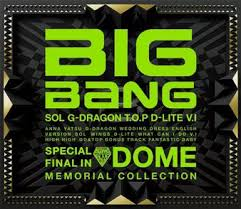

2012年12月

2012年12月5日 开业
GD作为礼物为父母投资建造了酒店
位于韩国京畿道抱川市的 Dolce Vita Pension
特别对VIP粉丝开放
由GD父亲亲自管理，常住于此并与GD的狗家虎一同照料客人
下面的视频来自@微博后院懒人帮 点击进入观看完整视频
2012年12月5日
Alive Galaxy Tour
日本东京
2012年12月8日
在 So-Loved Awards Europe 赢得：
- Best Band (Male)
- Best EP (Mini Album): Alive
- Best Song: Fantastic Baby
详细资讯： Allkpop
2012年12月8日
Alive Galaxy Tour
香港
胜利生日被大哥抱哈哈哈
2012年12月12日
GD 被Spin杂志的 David Bevan 评为：
- 年度最佳韩国流行单曲：Crayon
Bigbang歌曲也有被评：
- #7 Bad Boy
- #13 Fantastic Baby
详细资讯： Spin
2012年12月13日
在 So-Loved Awards 赢得：
- Best Male Group
- Best Song: Fantastic Baby
- Best Mini Album: Still Alive
GD 赢得：
- Best Male Solo Artist
详细资讯： Naver

2012年12月14日
在 Melon Music Awards 赢得：
- Top 10 Artists
被提名：
- Album of the Year: Alive
- Artist of the Year
- Song of the Year: Fantastic Baby
- Global Star Award: Fantastic Baby
GD 被提名：
- Album of the Year: One of a Kind
- Popular Netizen Song: Crayon
详细资讯： Wikipedia
2012年12月19日
在 Remarkable German Korean Awards 赢得：
- Party Song of the Year: Fantastic Baby
- Best Male Group
详细资讯： Wordpress
下面的视频来自@jerjerjerryyy 点击进入观看完整视频
2012年12月27日
完全胜利宣言
花絮 第一部分
下面的视频来自@jerjerjerryyy 点击进入观看完整视频
2012年12月28日
完全胜利宣言
花絮 第二部分
2012年12月31日
在 Allkpop Awards 赢得：
- Song of the Year: Fantastic Baby
被提名：
- Best Music Videos: Fantastic Baby
- Best Boy Band
- Greatest Fans VIP
详细资讯： Allkpop